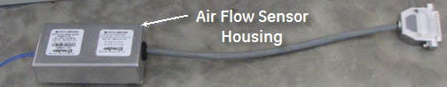
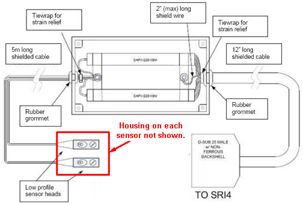
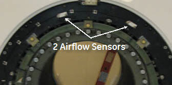
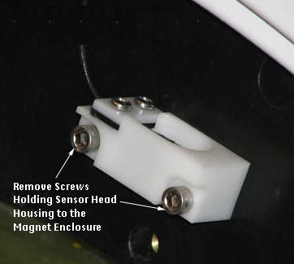

Operating Documentation
Direction 5500113, Rev# 3
Discovery MR750 3.0T Service Methods
Module Version 6.0, Version Date 9/3/10
Operating Documentation |
| Required Persons | Preliminary Reqs | Procedure | Finalization |
|---|---|---|---|
| 2 for MR450/MR750; 1 for MR450w | Not Applicable | 5 hr. for MR450/MR750; 1 hr. for MR450w | 4 hr. for MR450/MR750; 15 min. for MR450w |
This procedure describes the replacement of the RF Body Coil Air Flow Sensor.
| Item | Qty | Effectivity | Part# | Manufacturer | |
|---|---|---|---|---|---|
| Nonmagnetic Tool Kit | 1 | - | 5112581 | - | |
| Item | Qty | Effectivity | Part# | Manufacturer | |
|---|---|---|---|---|---|
| Air Flow Sensor | 1 | - | See the applicable FRU Manual. | - | |
Follow Lockout/Tagout procedures per LOTO for RF and PEN Cabinets and Magnet Room Electronics.
Remove the side cover and left skirt cover. Refer to Side Cover Removal and Installation and Skirt Cover Removal and Installation.
Remove the Split Bridge. Refer to Bridge Removal and Replacement.
Remove the front End Bell. Refer to Front End Bell Removal and Installation.
Disconnect the RF Body Coil Air Flow Sensor Housing from the Scan Room Interface (SRI).
Illustration 1: Air Flow Sensor Housing with Connector

| NOTE: | The illustration below is for reference only; Sensor-Head housings are not shown. |
Illustration 2: Air Flow Sensor Assembly Drawing

Refer to the illustration below to locate the RF Coil Air Flow Sensor-Head Housings at approximately the 11 o'clock and 1 o'clock positions on the magnet enclosure.
Illustration 3: RF Coil Air Flow Sensor-Head Housings

Remove and save the two (2) screws securing each Sensor-Head Housing to the magnet enclosure.
Illustration 4: Removal of Air Flow Sensor-Head Housings

Remove each Sensor-Head Housing from the magnetic enclosure and free the cable.
Route the new cable through the magnet enclosure.
Reposition each sensor-head housing in its hole pattern on the magnet enclosure, and secure with the saved screws.
Reconnect the RF Body Coil Air Flow Sensor Housing to the SRI.
Replace the Front End Bell, Split Bridge, and Side and Skirt covers following the procedures listed in Step 1 through Step 4 in reverse order.
Ensure that sensors are operating appropriately. Refer to Body Air Flow Functional Check for details.
Ensure the laser light is aligned. Refer to Laser Light Alignment for details.